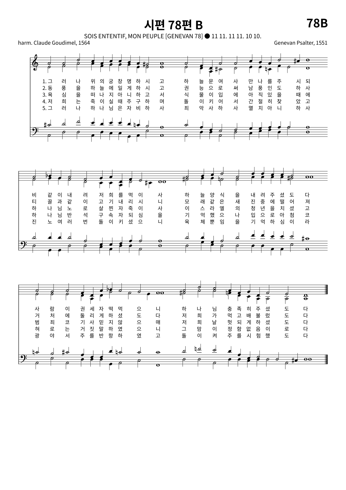

시편 78편 B
SOIS ENTENTIF, MON PEUPLE [GENEVAN 78] · 11 11. 11 11. 10 10.
곡조: Genevan Psalter, 1551 · 화성: Claude Goudimel, 1564 · 가사: 개역한글판 시편 78편 편역(AI 초벌 편역판 · 신학 감수 전) · 5절
시편 78편은 3곡으로 나누어 실었습니다: A B C · 이 곡은 시편 78편 가사의 7~11번째 절입니다.
악보 PDF MusicXML(출력용) MusicXML(반주용, 전주·반복 포함) 개역한글 시편 78편 읽기
악보
← 시편 78편 A 목록반주 재생(준비 중)시편 78편 C →
가사
1절
그러나 위의 궁창 명하시고
하늘 문 여사 만나를 주시되
비 같이 내려 저희를 먹이사
하늘 양식을 내려 주셨도다
사람이 권세자 떡 먹으니
하나님 충족히 주셨도다
그러나 위의 궁창 명하시고
하늘 문 여사 만나를 주시되
비 같이 내려 저희를 먹이사
하늘 양식을 내려 주셨도다
사람이 권세자 떡 먹으니
하나님 충족히 주셨도다
2절
동풍을 하늘에 일게 하시고
권능으로써 남풍 인도하사
티끌과 같이 고기 내리시니
모래 같은 새 진 중에 떨어져
거처에 둘리게 하셨도다
저희가 먹고 배불렀도다
동풍을 하늘에 일게 하시고
권능으로써 남풍 인도하사
티끌과 같이 고기 내리시니
모래 같은 새 진 중에 떨어져
거처에 둘리게 하셨도다
저희가 먹고 배불렀도다
3절
욕심을 떠나지 아니하고서
식물이 입에 아직 있을 때에
하나님 노로 살찐 자 죽이사
이스라엘의 청년을 치셨고
범죄코 기사 믿지 않으매
저희 날 헛되게 하셨도다
욕심을 떠나지 아니하고서
식물이 입에 아직 있을 때에
하나님 노로 살찐 자 죽이사
이스라엘의 청년을 치셨고
범죄코 기사 믿지 않으매
저희 날 헛되게 하셨도다
4절
저희는 죽이실 때 주 구하며
돌이키어서 간절히 찾았고
하나님 반석 구속자 되심을
기억했으나 입으로 아첨코
혀로는 거짓 말하였으니
그 맘이 정함 없음이로다
저희는 죽이실 때 주 구하며
돌이키어서 간절히 찾았고
하나님 반석 구속자 되심을
기억했으나 입으로 아첨코
혀로는 거짓 말하였으니
그 맘이 정함 없음이로다
5절
그러나 하나님은 자비하사
죄악 사하사 멸치 아니하사
진노 여러 번 돌이키셨으니
육체뿐임을 기억하심이라
광야서 주를 반항하였고
돌이켜 주를 시험했도다
그러나 하나님은 자비하사
죄악 사하사 멸치 아니하사
진노 여러 번 돌이키셨으니
육체뿐임을 기억하심이라
광야서 주를 반항하였고
돌이켜 주를 시험했도다